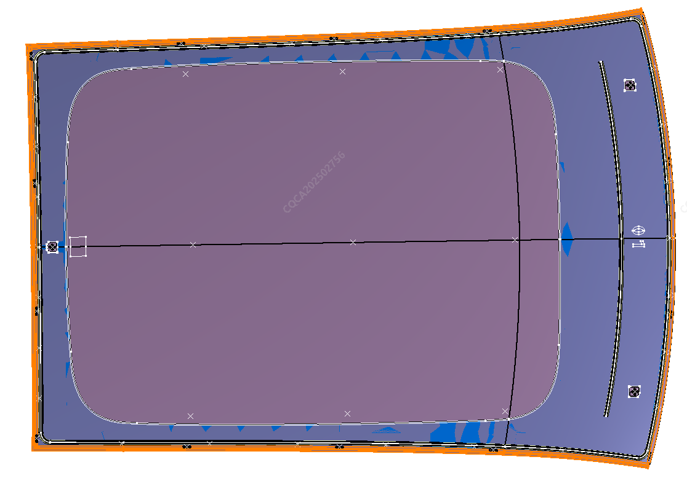
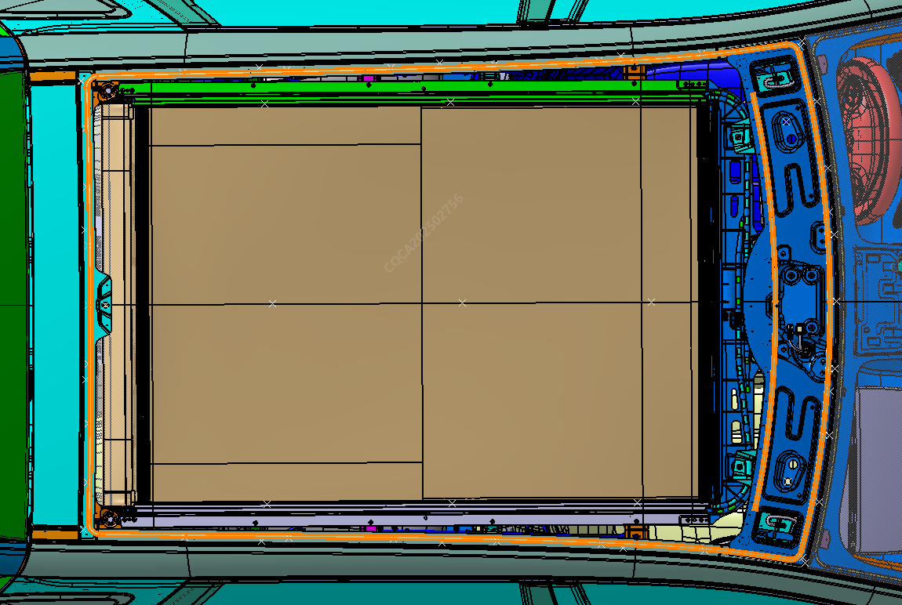
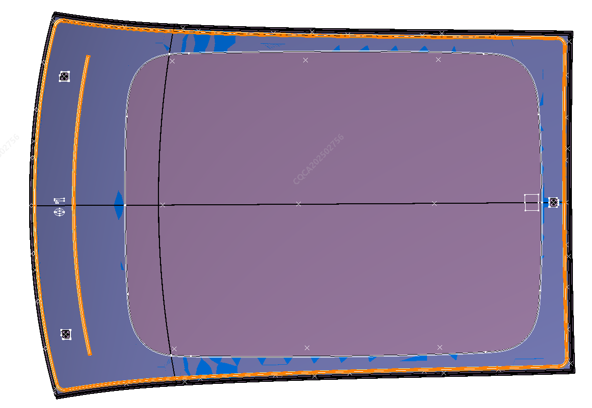
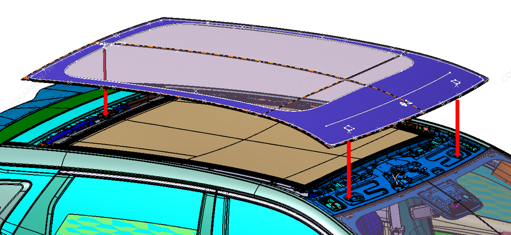

拆卸
1、先尽量撕掉顶盖玻璃周圈包边条；

2、参考拆卸前挡玻璃方法切割顶盖玻璃如下图虚线轨迹的玻璃胶，然后从车顶上部取下顶盖玻璃。

1、清理白车身残留的玻璃胶，若拆卸过程中造成白车身漆面或者钣金被损坏的，需要对损坏部位的漆面或者钣金进行修复；
2、另取新的顶盖玻璃，参考前挡玻璃的安装方法，按下图虚线轨迹新挤玻璃胶后，从车顶上部朝下安装顶盖玻璃；

3、安装过程中注意将定顶盖玻璃上的定位销与白车身的定位孔对中安装，顶盖玻璃定位销对中情况如下图所示；

4、顶盖玻璃落到白车身上后，推动顶盖玻璃优化与白车身间隙，拍打顶盖玻璃周圈打玻璃胶位置使其紧贴。
5、安装完成后对密封性进行检查，如用淋雨进行检查，检查过程中注意对车内进行保护处理
注意：1、新挤的玻璃胶轨迹需严格按照原车玻璃胶轨迹执行，不能朝车外或者车内偏移超过2mm（含）以上，否则可能会造成车辆漏水；2、顶盖玻璃安装到白车身上后，需将顶盖玻璃挤胶区域从车顶向下拍压到底，否则可能会造成车辆漏水、造成与周边零件匹配关系不正确等问题。